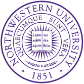
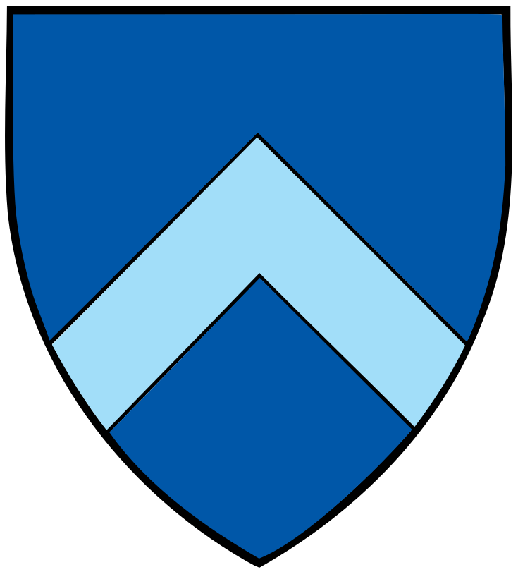
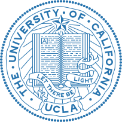

Track Record
Where Our Students Have Been Accepted
Real results from real students — across the most competitive universities in the country.
Ivy League, Ivy Plus & Top Privates
 4Stanford
4Stanford 3Harvard
3Harvard 3Yale
3Yale 3Cornell
3Cornell3Duke
 3USC
3USC
2Northwestern 1MIT
1MIT 1Princeton
1Princeton 1UPenn
1UPenn 1Wharton
1Wharton 1Brown
1Brown
1Columbia1Georgetown
1UChicago
UC System
 20+UCSD
20+UCSD 12UC Berkeley
12UC Berkeley
8UCLA15+UC Davis
15+UC Santa Barbara
15+UC Santa Cruz
3+UC Riverside
Public Flagships
 9UT Austin
9UT Austin 3UNC
3UNC 2Michigan
2Michigan